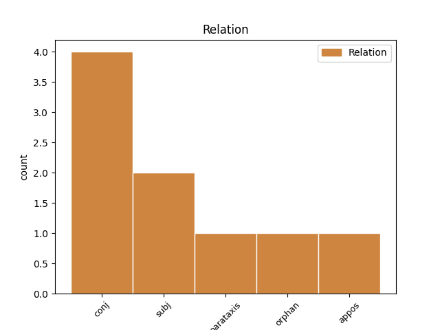
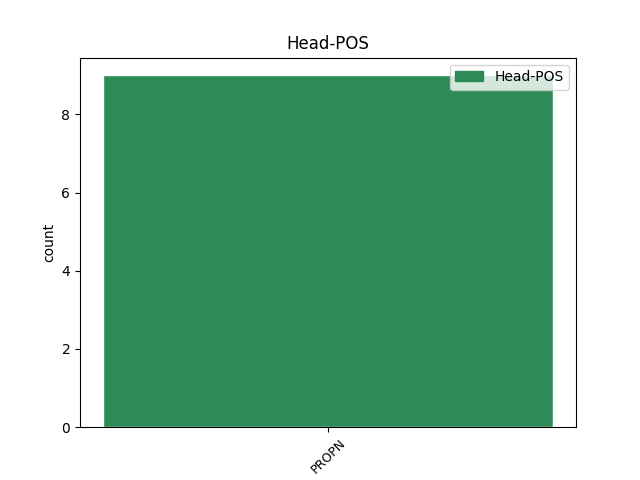
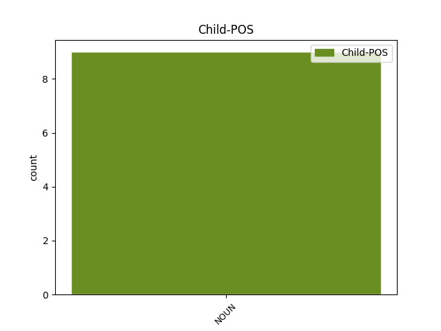

Distribution of features within this leaf



Agreement Rules sorted by frequency.
- When the dependent token is the conjunct(conj) of the head token, and the head token is PROPN and the dependent token is NOUN.
1 Be _ _ _ _ 0 _ _ _
2 to _ _ _ _ 0 _ _ _
3 , _ _ _ _ 0 _ _ _
4 jis _ _ _ _ 0 _ _ _
5 domisi _ _ _ _ 0 _ _ _
6 ne _ _ _ _ 0 _ _ _
7 tik _ _ _ _ 0 _ _ _
8 Atika Atika PROPN NNP Case=Ins|Gender=Masc|Number=Sing 0 _ _ _
9 , _ _ _ _ 0 _ _ _
10 ne _ _ _ _ 0 _ _ _
11 tik _ _ _ _ 0 _ _ _
12 savuoju _ _ _ _ 0 _ _ _
13 demu demas NOUN NN Case=Ins|Gender=Masc|Number=Sing 8 conj _ En=demos|SpaceAfter=No
14 , _ _ _ _ 0 _ _ _
15 kaip _ _ _ _ 0 _ _ _
16 Strepsiadas _ _ _ _ 0 _ _ _
17 , _ _ _ _ 0 _ _ _
18 bet _ _ _ _ 0 _ _ _
19 ir _ _ _ _ 0 _ _ _
20 kitais _ _ _ _ 0 _ _ _
21 kraštais _ _ _ _ 0 _ _ _
22 , _ _ _ _ 0 _ _ _
23 netgi _ _ _ _ 0 _ _ _
24 visata _ _ _ _ 0 _ _ _
25 – _ _ _ _ 0 _ _ _
26 taigi _ _ _ _ 0 _ _ _
27 yra _ _ _ _ 0 _ _ _
28 aiškus _ _ _ _ 0 _ _ _
29 globalistas _ _ _ _ 0 _ _ _
30 , _ _ _ _ 0 _ _ _
31 kosmopolitas _ _ _ _ 0 _ _ _
32 . _ _ _ _ 0 _ _ _
1 Bet _ _ _ _ 0 _ _ _
2 turbūt _ _ _ _ 0 _ _ _
3 nebus _ _ _ _ 0 _ _ _
4 nekuklu _ _ _ _ 0 _ _ _
5 , _ _ _ _ 0 _ _ _
6 jei _ _ _ _ 0 _ _ _
7 pasakysime _ _ _ _ 0 _ _ _
8 , _ _ _ _ 0 _ _ _
9 kad _ _ _ _ 0 _ _ _
10 turime _ _ _ _ 0 _ _ _
11 būti _ _ _ _ 0 _ _ _
12 lietuviškais _ _ _ _ 0 _ _ _
13 Faidonais Faidonais PROPN NNP Case=Ins|Gender=Masc|Number=Plur 0 _ _ _
14 , _ _ _ _ 0 _ _ _
15 Faidrais _ _ _ _ 0 _ _ _
16 arba _ _ _ _ 0 _ _ _
17 Kritonais _ _ _ _ 0 _ _ _
18 – _ _ _ _ 0 _ _ _
19 mokiniais mokinys NOUN NN Case=Ins|Gender=Masc|Number=Plur 13 appos _ En=pupile|SpaceAfter=No
20 , _ _ _ _ 0 _ _ _
21 atsakingais _ _ _ _ 0 _ _ _
22 už _ _ _ _ 0 _ _ _
23 savo _ _ _ _ 0 _ _ _
24 mokytojo _ _ _ _ 0 _ _ _
25 minčių _ _ _ _ 0 _ _ _
26 sklaidą _ _ _ _ 0 _ _ _
27 ir _ _ _ _ 0 _ _ _
28 už _ _ _ _ 0 _ _ _
29 jo _ _ _ _ 0 _ _ _
30 atminimą _ _ _ _ 0 _ _ _
31 . _ _ _ _ 0 _ _ _
1 Globalizmas _ _ _ _ 0 _ _ _
2 esąs _ _ _ _ 0 _ _ _
3 tik _ _ _ _ 0 _ _ _
4 plėšraus _ _ _ _ 0 _ _ _
5 kapitalizmo _ _ _ _ 0 _ _ _
6 priedanga _ _ _ _ 0 _ _ _
7 ir _ _ _ _ 0 _ _ _
8 pseudonimas _ _ _ _ 0 _ _ _
9 , _ _ _ _ 0 _ _ _
10 o _ _ _ _ 0 _ _ _
11 iš _ _ _ _ 0 _ _ _
12 to _ _ _ _ 0 _ _ _
13 plėšraus _ _ _ _ 0 _ _ _
14 kapitalizmo _ _ _ _ 0 _ _ _
15 turi _ _ _ _ 0 _ _ _
16 naudos _ _ _ _ 0 _ _ _
17 tik _ _ _ _ 0 _ _ _
18 tamsios _ _ _ _ 0 _ _ _
19 internacionalinės _ _ _ _ 0 _ _ _
20 jėgos _ _ _ _ 0 _ _ _
21 – _ _ _ _ 0 _ _ _
22 paprastai _ _ _ _ 0 _ _ _
23 dėl _ _ _ _ 0 _ _ _
24 viso _ _ _ _ 0 _ _ _
25 pikto _ _ _ _ 0 _ _ _
26 nesakoma _ _ _ _ 0 _ _ _
27 , _ _ _ _ 0 _ _ _
28 bet _ _ _ _ 0 _ _ _
29 gana _ _ _ _ 0 _ _ _
30 aiškiai _ _ _ _ 0 _ _ _
31 duodama _ _ _ _ 0 _ _ _
32 suprasti _ _ _ _ 0 _ _ _
33 , _ _ _ _ 0 _ _ _
34 kad _ _ _ _ 0 _ _ _
35 tai _ _ _ _ 0 _ _ _
36 žydai _ _ _ _ 0 _ _ _
37 ( _ _ _ _ 0 _ _ _
38 pavyzdžiui pavyzdys NOUN NN Case=Dat|Gender=Masc|Number=Sing 39 parataxis _ En=for_example
39 Sorosas Sorosas PROPN NNP Case=Nom|Gender=Masc|Number=Sing 0 _ _ _
40 ) _ _ _ _ 0 _ _ _
41 . _ _ _ _ 0 _ _ _
1 Turi _ _ _ _ 0 _ _ _
2 atsirasti _ _ _ _ 0 _ _ _
3 nauja _ _ _ _ 0 _ _ _
4 valstybinė _ _ _ _ 0 _ _ _
5 ir _ _ _ _ 0 _ _ _
6 tautinė _ _ _ _ 0 _ _ _
7 sąmonė _ _ _ _ 0 _ _ _
8 , _ _ _ _ 0 _ _ _
9 tokia _ _ _ _ 0 _ _ _
10 kaip _ _ _ _ 0 _ _ _
11 dabartinių _ _ _ _ 0 _ _ _
12 vokiečių _ _ _ _ 0 _ _ _
13 , _ _ _ _ 0 _ _ _
14 anglų _ _ _ _ 0 _ _ _
15 ar _ _ _ _ 0 _ _ _
16 prancūzų _ _ _ _ 0 _ _ _
17 , _ _ _ _ 0 _ _ _
18 o _ _ _ _ 0 _ _ _
19 ne _ _ _ _ 0 _ _ _
20 tokia _ _ _ _ 0 _ _ _
21 , _ _ _ _ 0 _ _ _
22 kaip _ _ _ _ 0 _ _ _
23 Radio _ _ _ _ 0 _ _ _
24 Maryja _ _ _ _ 0 _ _ _
25 lenkų _ _ _ _ 0 _ _ _
26 arba _ _ _ _ 0 _ _ _
27 Dugino Dugina PROPN NNP Case=Gen|Gender=Masc|Number=Sing 0 _ _ _
28 bei _ _ _ _ 0 _ _ _
29 Prochanovo _ _ _ _ 0 _ _ _
30 rusų rusas NOUN NN Case=Gen|Gender=Masc|Number=Plur 27 orphan _ En=Russian|SpaceAfter=No
31 . _ _ _ _ 0 _ _ _
Disagree Examples:
1 „ _ _ _ _ 0 _ _ _
2 Šis _ _ _ _ 0 _ _ _
3 apdovanojimas _ _ _ _ 0 _ _ _
4 jai _ _ _ _ 0 _ _ _
5 skirtas _ _ _ _ 0 _ _ _
6 už _ _ _ _ 0 _ _ _
7 dialogo _ _ _ _ 0 _ _ _
8 kūrimą _ _ _ _ 0 _ _ _
9 , _ _ _ _ 0 _ _ _
10 atminties _ _ _ _ 0 _ _ _
11 skatinimą _ _ _ _ 0 _ _ _
12 ir _ _ _ _ 0 _ _ _
13 sakymą _ _ _ _ 0 _ _ _
14 , _ _ _ _ 0 _ _ _
15 kad _ _ _ _ 0 _ _ _
16 svetimo _ _ _ _ 0 _ _ _
17 skausmo _ _ _ _ 0 _ _ _
18 nėra _ _ _ _ 0 _ _ _
19 , _ _ _ _ 0 _ _ _
20 kad _ _ _ _ 0 _ _ _
21 XX _ _ _ _ 0 _ _ _
22 amžiaus _ _ _ _ 0 _ _ _
23 tragedijos _ _ _ _ 0 _ _ _
24 – _ _ _ _ 0 _ _ _
25 Holokauskas Holokauskas PROPN NNP Case=Nom|Gender=Masc|Number=Sing 0 _ _ _
26 , _ _ _ _ 0 _ _ _
27 tremtis tremtis NOUN NN Case=Nom|Gender=Fem|Number=Sing 25 conj _ En=exile
28 – _ _ _ _ 0 _ _ _
29 palietė _ _ _ _ 0 _ _ _
30 visus _ _ _ _ 0 _ _ _
31 Lietuvos _ _ _ _ 0 _ _ _
32 piliečius _ _ _ _ 0 _ _ _
33 , _ _ _ _ 0 _ _ _
34 nepaisant _ _ _ _ 0 _ _ _
35 jų _ _ _ _ 0 _ _ _
36 tautybės _ _ _ _ 0 _ _ _
37 “ _ _ _ _ 0 _ _ _
38 , _ _ _ _ 0 _ _ _
39 – _ _ _ _ 0 _ _ _
40 BNS _ _ _ _ 0 _ _ _
41 sakė _ _ _ _ 0 _ _ _
42 Sugiharos _ _ _ _ 0 _ _ _
43 fondo _ _ _ _ 0 _ _ _
44 „ _ _ _ _ 0 _ _ _
45 Diplomatai _ _ _ _ 0 _ _ _
46 už _ _ _ _ 0 _ _ _
47 gyvybę _ _ _ _ 0 _ _ _
48 “ _ _ _ _ 0 _ _ _
49 atstovas _ _ _ _ 0 _ _ _
50 Linas _ _ _ _ 0 _ _ _
51 Venclauskas _ _ _ _ 0 _ _ _
52 . _ _ _ _ 0 _ _ _
1 Jei _ _ _ _ 0 _ _ _
2 būtų _ _ _ _ 0 _ _ _
3 laimėjęs _ _ _ _ 0 _ _ _
4 Strepsiadas Strepsiadas PROPN NNP Case=Nom|Gender=Masc|Number=Sing 0 _ _ _
5 , _ _ _ _ 0 _ _ _
6 tiksliau _ _ _ _ 0 _ _ _
7 , _ _ _ _ 0 _ _ _
8 Strepsiado _ _ _ _ 0 _ _ _
9 idėja idėja NOUN NN Case=Nom|Gender=Fem|Number=Sing 4 conj _ En=idea
10 – _ _ _ _ 0 _ _ _
11 ligi _ _ _ _ 0 _ _ _
12 šiol _ _ _ _ 0 _ _ _
13 gyventume _ _ _ _ 0 _ _ _
14 dorų _ _ _ _ 0 _ _ _
15 , _ _ _ _ 0 _ _ _
16 darbščių _ _ _ _ 0 _ _ _
17 , _ _ _ _ 0 _ _ _
18 patriarchališkų _ _ _ _ 0 _ _ _
19 , _ _ _ _ 0 _ _ _
20 tėvynę _ _ _ _ 0 _ _ _
21 mylinčių _ _ _ _ 0 _ _ _
22 žemdirbių _ _ _ _ 0 _ _ _
23 bendruomenėse _ _ _ _ 0 _ _ _
24 , _ _ _ _ 0 _ _ _
25 nieko _ _ _ _ 0 _ _ _
26 nežinančiose _ _ _ _ 0 _ _ _
27 ir _ _ _ _ 0 _ _ _
28 nenorinčiose _ _ _ _ 0 _ _ _
29 žinoti _ _ _ _ 0 _ _ _
30 apie _ _ _ _ 0 _ _ _
31 tolimesnius _ _ _ _ 0 _ _ _
32 kraštus _ _ _ _ 0 _ _ _
33 ir _ _ _ _ 0 _ _ _
34 visatą _ _ _ _ 0 _ _ _
35 – _ _ _ _ 0 _ _ _
36 beje _ _ _ _ 0 _ _ _
37 , _ _ _ _ 0 _ _ _
38 apsuptose _ _ _ _ 0 _ _ _
39 nekenčiamų _ _ _ _ 0 _ _ _
40 ir _ _ _ _ 0 _ _ _
41 iš _ _ _ _ 0 _ _ _
42 tikro _ _ _ _ 0 _ _ _
43 pavojingų _ _ _ _ 0 _ _ _
44 barbarų _ _ _ _ 0 _ _ _
45 genčių _ _ _ _ 0 _ _ _
46 . _ _ _ _ 0 _ _ _
1 Kalbama _ _ _ _ 0 _ _ _
2 apie _ _ _ _ 0 _ _ _
3 tradicines _ _ _ _ 0 _ _ _
4 Lietuvos _ _ _ _ 0 _ _ _
5 vertybes _ _ _ _ 0 _ _ _
6 , _ _ _ _ 0 _ _ _
7 kurios _ _ _ _ 0 _ _ _
8 yra _ _ _ _ 0 _ _ _
9 priešingos _ _ _ _ 0 _ _ _
10 ir _ _ _ _ 0 _ _ _
11 priešiškos _ _ _ _ 0 _ _ _
12 abejotinoms _ _ _ _ 0 _ _ _
13 Europos Europa PROPN NNP Case=Gen|Gender=Fem|Number=Sing 0 _ _ _
14 bei _ _ _ _ 0 _ _ _
15 globalizmo globalizmas NOUN NN Case=Gen|Gender=Masc|Number=Sing 13 conj _ En=globalism
16 vertybėms _ _ _ _ 0 _ _ _
17 . _ _ _ _ 0 _ _ _
1 „ _ _ _ _ 0 _ _ _
2 Mano _ _ _ _ 0 _ _ _
3 adresas _ _ _ _ 0 _ _ _
4 ne _ _ _ _ 0 _ _ _
5 namas _ _ _ _ 0 _ _ _
6 ir _ _ _ _ 0 _ _ _
7 ne _ _ _ _ 0 _ _ _
8 gatvė _ _ _ _ 0 _ _ _
9 – _ _ _ _ 0 _ _ _
10 mano _ _ _ _ 0 _ _ _
11 adresas adresas NOUN NN Case=Nom|Gender=Masc|Number=Sing 13 subj _ En=address
12 Europos _ _ _ _ 0 _ _ _
13 Sąjunga sąjunga PROPN NNP Case=Nom|Gender=Fem|Number=Sing 0 _ _ _
14 “ _ _ _ _ 0 _ _ _
15 , _ _ _ _ 0 _ _ _
16 toliau _ _ _ _ 0 _ _ _
17 ironizuoja _ _ _ _ 0 _ _ _
18 Radžvilas _ _ _ _ 0 _ _ _
19 . _ _ _ _ 0 _ _ _
1 Taip _ _ _ _ 0 _ _ _
2 , _ _ _ _ 0 _ _ _
3 mano _ _ _ _ 0 _ _ _
4 adresas adresas NOUN NN Case=Nom|Gender=Masc|Number=Sing 16 subj _ En=address
5 – _ _ _ _ 0 _ _ _
6 ne _ _ _ _ 0 _ _ _
7 menkutė _ _ _ _ 0 _ _ _
8 , _ _ _ _ 0 _ _ _
9 izoliuota _ _ _ _ 0 _ _ _
10 , _ _ _ _ 0 _ _ _
11 visų _ _ _ _ 0 _ _ _
12 aplinkui _ _ _ _ 0 _ _ _
13 neapkenčianti _ _ _ _ 0 _ _ _
14 ir _ _ _ _ 0 _ _ _
15 bijanti _ _ _ _ 0 _ _ _
16 Lietuva Lietuva PROPN NNP Case=Nom|Gender=Fem|Number=Sing 0 _ _ _
17 , _ _ _ _ 0 _ _ _
18 o _ _ _ _ 0 _ _ _
19 Lietuva _ _ _ _ 0 _ _ _
20 Europoje _ _ _ _ 0 _ _ _
21 , _ _ _ _ 0 _ _ _
22 Lietuva _ _ _ _ 0 _ _ _
23 pasaulyje _ _ _ _ 0 _ _ _
24 . _ _ _ _ 0 _ _ _